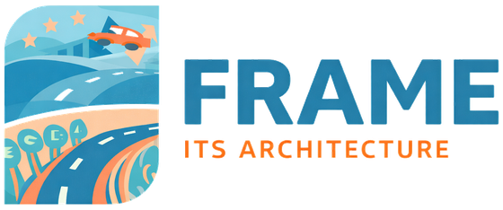

FRAME – European ITS Framework Architecture
FRAME is the European framework for planning integrated and interoperable Intelligent Transport Systems (ITS). It contains the User Needs and the functionality of practically all of ITS, a method for selecting the part a service needs, and an Enterprise Architect tool in which the motivation, functional, organisational, physical and communication views of the service are built.
Download FRAME 5.2 Get started Reference architectures
-
Learn
What an ITS architecture is, how FRAME is built and how to create an architecture with it.
-
Use
Download the FRAME Architecture Tool, browse the model and start from a reference architecture.
-
Library
Guides, deliverables of the FRAME projects, papers and answers to common questions.
-
Contribute
Report a problem or propose a change; FRAME is maintained openly on GitHub.
News
- November 2026 – releases 5.2 and 5.1.1 published on GitHub with release notes; release 5.3 in preparation (pull request #95). See Release history.
Acknowledgment
The FRAME has received funding from the European Union's Connecting Europe Facility (CEF) programme under grant agreement No [MOVE/C3/SUB/2016-405/CEF/PSA/SI2.759934]. For more information go to Projects section.
The content of this document reflects only the authors' views, and the European Union is not responsible for any use that may be made of the information it contains.